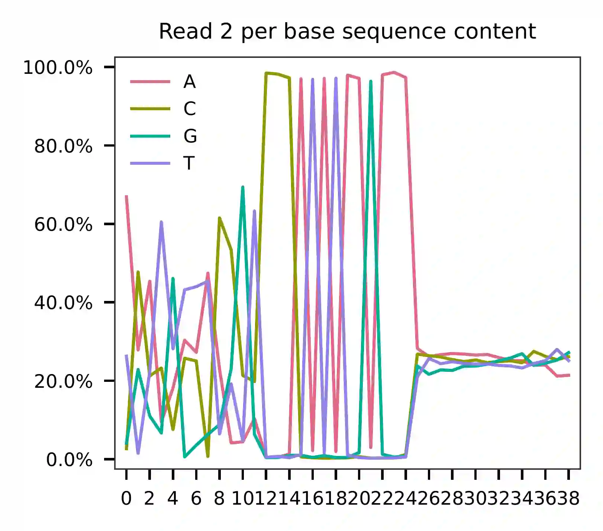
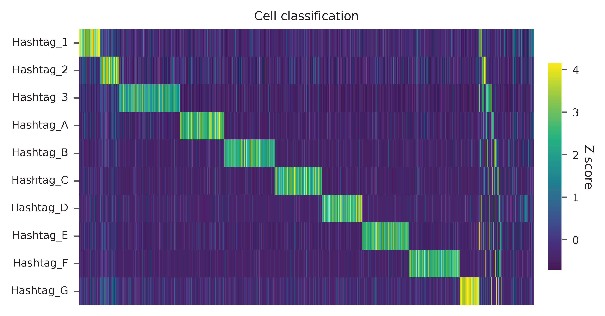

6k Single-cell Multimodal Readout of NIH-3T3, MyLa, Sez4 and PBMCs¶
Dataset: ECCITE-seq
Mimitou, E.P., Cheng, A., Montalbano, A., Hao, S., Stoeckius, M., Legut, M., Roush, T., Herrera, A., Papalexi, E., Ouyang, Z., et al. (2019). Multiplexed detection of proteins, transcriptomes, clonotypes and CRISPR perturbations in single cells. Nat. Methods 16, 409–412.
Preparation¶
Download fastq files from European Nucleotide Archive.
Hashtag (Cell hashing):
$ curl -O ftp://ftp.sra.ebi.ac.uk/vol1/fastq/SRR855/007/SRR8550947/SRR8550947_1.fastq.gz
$ curl -O ftp://ftp.sra.ebi.ac.uk/vol1/fastq/SRR855/007/SRR8550947/SRR8550947_2.fastq.gz
Protein-tag (CITE-seq):
$ curl -O ftp://ftp.sra.ebi.ac.uk/vol1/fastq/SRR855/006/SRR8550946/SRR8550946_1.fastq.gz
$ curl -O ftp://ftp.sra.ebi.ac.uk/vol1/fastq/SRR855/006/SRR8550946/SRR8550946_2.fastq.gz
Guide-tag (sgRNAs):
$ curl -O ftp://ftp.sra.ebi.ac.uk/vol1/fastq/SRR855/008/SRR8550948/SRR8550948_1.fastq.gz
$ curl -O ftp://ftp.sra.ebi.ac.uk/vol1/fastq/SRR855/008/SRR8550948/SRR8550948_2.fastq.gz
Download pre-processed transcriptome matrix from Gene Expression Omnibus. We will need the cell-associated barcodes, which are determined by the transcriptomes.
$ wget https://ftp.ncbi.nlm.nih.gov/geo/samples/GSM3596nnn/GSM3596084/suppl/GSM3596084_mx-cDNA.txt.gz
Inspect cell barcodes:
$ gzip -dc GSM3596084_mx-cDNA.txt.gz | head -1 | sed 's/"//g' | sed 's/ /\n/g' | sort | grep -B1 1
CAGATCACACGTAAGG
CAGATCACACGTAAGG.1
--
CGCTATCAGCCGCCTA
CGCTATCAGCCGCCTA.1
--
TTTGCGCCAGTTCATG
TTTGCGCCAGTTCATG.1
It seems there are 3 colliding barcodes. We will use the first ones.
$ gzip -dc GSM3596084_mx-cDNA.txt.gz | head -1 | sed 's/"//g' | sed 's/ /\n/g' | sort | grep -v 1 > cell_barcodes.txt
$ head cell_barcodes.txt
AAACCTGAGTGGTAGC
AAACCTGAGTGTTTGC
AAACCTGAGTTAGGTA
AAACCTGCAAGTTGTC
AAACCTGCAATTCCTT
AAACCTGCACAGACTT
AAACCTGCACATCCGG
AAACCTGCACGGTAAG
AAACCTGCAGACACTT
AAACCTGCATCCGCGA
Hashtag¶
Preparation¶
Prepare feature barcodes (hashtag-oligo sequences, from Supplementary Table 4 and 5, legend of Supplementary Figure 1):
NIH-3T3 cells were split into 7 tubes and stained with 7 barcoded hashing antibodies (Hashtag-A to Hashtag-G), followed by washing and pooling. MyLa, Sez4 and PBMCs were stained with Hashtag_1, Hashtag_2 and Hashtag_3 respectively.
$ cat feature_barcodes_hashtag.tsv
Hashtag_1 ACATGTTACCGT
Hashtag_2 AGCTTACTATCC
Hashtag_3 TATCACATCGGT
Hashtag_A AGGACCATCCAA
Hashtag_B TCGATAATGCGA
Hashtag_C GAGGCTGAGCTA
Hashtag_D GTGTGACGTATT
Hashtag_E ACTGTCTAACGG
Hashtag_F CACATAATGACG
Hashtag_G TAACGACGTGGT
QC¶
The first 100,000 read pairs are sampled (default, set by -n) for
quality control. The -t option can be used to set the number of
threads. By default, diagnostic results and plots are generated in the
qc directory (set by --output_directory), and the full length of
read 1 and read 2 are searched against reference cell and feature
barcodes, respectively. The per base content of both read pairs and the
distribution of matched barcode positions are summarized. Use -r1_c
and/or -r2_c to limit the search range, and -cb_n and/or
-fb_n to set the mismatch tolerance for cell and/or feature barcode
matching (default 3).
$ fba qc \
-1 SRR8550947_1.fastq.gz \
-2 SRR8550947_2.fastq.gz \
-w cell_barcodes.txt \
-f feature_barcodes_hashtag.tsv \
--output_directory qc
2022-01-08 16:32:43,465 - fba.__main__ - INFO - fba version: 0.0.x
2022-01-08 16:32:43,465 - fba.__main__ - INFO - Initiating logging ...
2022-01-08 16:32:43,465 - fba.__main__ - INFO - Python version: 3.7
2022-01-08 16:32:43,465 - fba.__main__ - INFO - Using qc subcommand ...
2022-01-08 16:32:44,108 - fba.qc - INFO - Summarizing per base read content ...
2022-01-08 16:32:44,108 - fba.qc - INFO - Number of read pairs to analyze: 100,000
2022-01-08 16:32:44,108 - fba.qc - INFO - Output directory: qc
2022-01-08 16:32:44,429 - fba.qc - INFO - Number of reads processed: 100,000
2022-01-08 16:32:47,187 - fba.regex - INFO - regex version: 2.5.91
2022-01-08 16:32:47,192 - fba.regex - INFO - Number of reference cell barcodes: 6,871
2022-01-08 16:32:47,192 - fba.regex - INFO - Number of reference feature barcodes: 10
2022-01-08 16:32:47,192 - fba.regex - INFO - Cell barcode maximum number of mismatches: 3
2022-01-08 16:32:47,192 - fba.regex - INFO - Feature barcode maximum number of mismatches: 3
2022-01-08 16:32:47,192 - fba.regex - INFO - Read 1 maximum number of N allowed: inf
2022-01-08 16:32:47,192 - fba.regex - INFO - Read 2 maximum number of N allowed: inf
2022-01-08 16:32:47,192 - fba.regex - INFO - Number of read pairs to analyze: 100,000
2022-01-08 16:32:48,448 - fba.regex - INFO - Number of threads: 72
2022-01-08 16:32:48,448 - fba.regex - INFO - Chunk size: 50,000
2022-01-08 16:32:48,449 - fba.regex - INFO - Matching ...
2022-01-08 16:33:55,391 - fba.regex - INFO - Read pairs processed: 50,000
2022-01-08 16:35:02,689 - fba.regex - INFO - Read pairs processed: 100,000
2022-01-08 16:35:04,179 - fba.qc - INFO - Summarizing barcode coordinates ...
2022-01-08 16:35:04,179 - fba.qc - INFO - Output directory: qc
2022-01-08 16:35:05,431 - fba.__main__ - INFO - Done.
For read 1, the first 16 bases represent cell barcodes, and the following 10 bases are UMIs (the read 1 length is 26). According to the base content plot, the GC content of cell barcodes is relatively uniform. However, UMIs are slightly enriched with T bases.

As for read 2, the per base content suggests that bases 0-12 correspond to our feature barcodes (refer to the distribution of matched barcode positions on read 2).
{kind=link}
{kind=link}
The detailed qc results are stored in the
feature_barcoding_output.tsv.gz file. The matching_pos columns
indicate the matched positions on reads, while the
matching_description columns indicate mismatches in the format of
substitutions:insertions:deletions.
$ gzip -dc qc/feature_barcoding_output.tsv.gz | head
read1_seq cell_barcode cb_matching_pos cb_matching_description read2_seq feature_barcode fb_matching_pos fb_matching_description
NGACGGCGTGTGACGAACGCGCGCCT GACGCGTGTGCGAAAC 1:18 0:2:1 ACATGTTACCGTCCCATATAAGAAAAGGCGCGCGTTCGT Hashtag_1_ACATGTTACCGT 0:12 0:0:0
NCTACACCACGGTAGAGACCTAGGTC CACCACTGTGAGTGAC 4:19 2:0:1 AGGACCATCCAACCCATATAAGAAAGACCTAGGTCTCTA Hashtag_A_AGGACCATCCAA 0:12 0:0:0
GCAAACTAGATGGCGTCGACGCTTAG GCAAACTAGATGGCGT 0:16 0:0:0 AGCTTACTATCCCCCATATAGAAGCTAAGCGTCGACGCC Hashtag_2_AGCTTACTATCC 0:12 0:0:0
CCTTCGAAGTGCCATTCTTTCACTGG CCTTCGAAGTGCCATT 0:16 0:0:0 TATCACATCGGTCCCATATAAGAAACCAGTGAAAGAATG Hashtag_3_TATCACATCGGT 0:12 0:0:0
NGATCTGGTATGAAACGATCAGGTCA AGATCTGGTATGAAAC 0:16 1:0:0 AGCTTACTATCCCCCATATAAGAAATGACCTGATCGTTT Hashtag_2_AGCTTACTATCC 0:12 0:0:0
NTCGGGATCTGTGCAAATCGGGTAGT CTCGGGATCTGTGCAA 0:16 1:0:0 AGCTTACTATCCCCCATATAAGAAACTACCCGATTTGCA Hashtag_2_AGCTTACTATCC 0:12 0:0:0
GCGCGATGTACTTAGCTGCGTAGGTG GCGCGATGTACTTAGC 0:16 0:0:0 TATCACATCGGTCCCATATAAGAAACACCTACGCAGCTA Hashtag_3_TATCACATCGGT 0:12 0:0:0
AACCGCGCACACAGAGCGTTTGGCCG AACCGCGCACACAGAG 0:16 0:0:0 ACATGTTACCGTCCCATATAAGAAACGGCCAAACGCTCT Hashtag_1_ACATGTTACCGT 0:12 0:0:0
NAATGAACATGCGCACACGATAGTTT no_match NA NA TATCACATCGGTCCCATATAAGAAAAAACTATCGTGTGC NA NA NA
Barcode extraction¶
Both the cell and feature barcodes have identical lengths of 16 and 12,
respectively. The qc results show a very uniform distribution of the
starting and ending positions of the barcodes. The search range for read
1 is set to 0,16, and for read 2, it is set to 0,12. A single
mismatch (-cb_m, -cf_m) is permitted for the cell and feature
barcodes. Additionally, three ambiguous nucleotides (Ns) are allowed by
default for both read 1 and read 2 (-cb_n, -cf_n).
$ fba extract \
-1 SRR8550947_1.fastq.gz \
-2 SRR8550947_2.fastq.gz \
-w cell_barcodes.txt \
-f feature_barcodes_hashtag.tsv \
-o feature_barcoding_output.tsv.gz \
-r1_c 0,16 \
-r2_c 0,12 \
-cb_m 1 \
-fb_m 1 \
-cb_n 3 \
-fb_n 3
Preview of result.
$ gzip -dc feature_barcoding_output.tsv.gz | head
read1_seq cell_barcode cb_num_mismatches read2_seq feature_barcode fb_num_mismatches
NGACGGCGTGTGACGAacgcgcgcct TGACGGCGTGTGACGA 1 ACATGTTACCGTcccatataagaaaaggcgcgcgttcgt Hashtag_1_ACATGTTACCGT 0
NCTACACCACGGTAGAgacctaggtc CCTACACCACGGTAGA 1 AGGACCATCCAAcccatataagaaagacctaggtctcta Hashtag_A_AGGACCATCCAA 0
GCAAACTAGATGGCGTcgacgcttag GCAAACTAGATGGCGT 0 AGCTTACTATCCcccatatagaagctaagcgtcgacgcc Hashtag_2_AGCTTACTATCC 0
CCTTCGAAGTGCCATTctttcactgg CCTTCGAAGTGCCATT 0 TATCACATCGGTcccatataagaaaccagtgaaagaatg Hashtag_3_TATCACATCGGT 0
NGATCTGGTATGAAACgatcaggtca AGATCTGGTATGAAAC 1 AGCTTACTATCCcccatataagaaatgacctgatcgttt Hashtag_2_AGCTTACTATCC 0
NTCGGGATCTGTGCAAatcgggtagt CTCGGGATCTGTGCAA 1 AGCTTACTATCCcccatataagaaactacccgatttgca Hashtag_2_AGCTTACTATCC 0
GCGCGATGTACTTAGCtgcgtaggtg GCGCGATGTACTTAGC 0 TATCACATCGGTcccatataagaaacacctacgcagcta Hashtag_3_TATCACATCGGT 0
AACCGCGCACACAGAGcgtttggccg AACCGCGCACACAGAG 0 ACATGTTACCGTcccatataagaaacggccaaacgctct Hashtag_1_ACATGTTACCGT 0
TCAGATGAGAATGTTGgtggggcttc TCAGATGAGAATGTTG 0 TATCACATCGGTcccatataagaaagaagccccaccaac Hashtag_3_TATCACATCGGT 0
Result summary.
57.0% (4,897,995 out of 8,591,807) of total read pairs have valid cell and feature barcodes.
2022-01-08 16:35:05,778 - fba.__main__ - INFO - fba version: 0.0.x
2022-01-08 16:35:05,778 - fba.__main__ - INFO - Initiating logging ...
2022-01-08 16:35:05,778 - fba.__main__ - INFO - Python version: 3.7
2022-01-08 16:35:05,778 - fba.__main__ - INFO - Using extract subcommand ...
2022-01-08 16:35:05,791 - fba.levenshtein - INFO - Number of reference cell barcodes: 6,871
2022-01-08 16:35:05,791 - fba.levenshtein - INFO - Number of reference feature barcodes: 10
2022-01-08 16:35:05,791 - fba.levenshtein - INFO - Read 1 coordinates to search: [0, 16)
2022-01-08 16:35:05,791 - fba.levenshtein - INFO - Read 2 coordinates to search: [0, 12)
2022-01-08 16:35:05,791 - fba.levenshtein - INFO - Cell barcode maximum number of mismatches: 1
2022-01-08 16:35:05,792 - fba.levenshtein - INFO - Feature barcode maximum number of mismatches: 1
2022-01-08 16:35:05,792 - fba.levenshtein - INFO - Read 1 maximum number of N allowed: 3
2022-01-08 16:35:05,792 - fba.levenshtein - INFO - Read 2 maximum number of N allowed: 3
2022-01-08 16:35:05,984 - fba.levenshtein - INFO - Matching ...
2022-01-08 16:38:39,570 - fba.levenshtein - INFO - Number of read pairs processed: 8,591,807
2022-01-08 16:38:39,572 - fba.levenshtein - INFO - Number of read pairs w/ valid barcodes: 4,897,995
2022-01-08 16:38:39,582 - fba.__main__ - INFO - Done.
Matrix generation¶
Only fragments with correctly matched cell and feature barcodes are
included, while fragments with UMI lengths less than the specified value
are discarded. UMI removal is performed using UMI-tools (Smith, T., et
al. 2017. Genome Res. 27, 491–499.), with the starting position on
read 1 set by -us (default 16) and the length set by -ul
(default 12). The UMI deduplication method can be set using -ud
(default directional), and the UMI deduplication mismatch threshold
can be specified using -um (default 1).
The generated feature count matrix can be easily imported into well-established single cell analysis packages: Seurat and Scanpy.
$ fba count \
-i feature_barcoding_output.tsv.gz \
-o matrix_featurecount.csv.gz \
-us 16 \
-ul 10 \
-um 1 \
-ud directional
Result summary.
31.3% (1,531,088 out of 4,897,995) of read pairs with valid cell and feature barcodes are unique fragments. 17.8% (1,531,088 out of 8,591,807) of total sequenced read pairs contribute to the final matrix with an average of 55 UMIs per cell.
2022-01-08 16:41:49,871 - fba.__main__ - INFO - fba version: 0.0.x
2022-01-08 16:41:49,871 - fba.__main__ - INFO - Initiating logging ...
2022-01-08 16:41:49,871 - fba.__main__ - INFO - Python version: 3.7
2022-01-08 16:41:49,871 - fba.__main__ - INFO - Using demultiplex subcommand ...
2022-01-08 16:42:01,202 - fba.__main__ - INFO - Skipping arguments: "-p/--prob"
2022-01-08 16:42:01,203 - fba.demultiplex - INFO - Output directory: demultiplexed
2022-01-08 16:42:01,203 - fba.demultiplex - INFO - Demultiplexing method: 1
2022-01-08 16:42:01,203 - fba.demultiplex - INFO - UMI normalization method: clr
2022-01-08 16:42:01,203 - fba.demultiplex - INFO - Visualization: On
2022-01-08 16:42:01,203 - fba.demultiplex - INFO - Visualization method: tsne
2022-01-08 16:42:01,203 - fba.demultiplex - INFO - Loading feature count matrix: matrix_featurecount.csv.gz ...
2022-01-08 16:42:01,479 - fba.demultiplex - INFO - Number of cells: 6,871
2022-01-08 16:42:01,479 - fba.demultiplex - INFO - Number of positive cells for a feature to be included: 200
2022-01-08 16:42:01,498 - fba.demultiplex - INFO - Number of features: 10 / 10 (after filtering / original in the matrix)
2022-01-08 16:42:01,498 - fba.demultiplex - INFO - Features: Hashtag_1 Hashtag_2 Hashtag_3 Hashtag_A Hashtag_B Hashtag_C Hashtag_D Hashtag_E Hashtag_F Hashtag_G
2022-01-08 16:42:01,499 - fba.demultiplex - INFO - Total UMIs: 1,531,088 / 1,531,088
2022-01-08 16:42:01,507 - fba.demultiplex - INFO - Median number of UMIs per cell: 55.0 / 55.0
2022-01-08 16:42:01,507 - fba.demultiplex - INFO - Demultiplexing ...
2022-01-08 16:44:11,296 - fba.demultiplex - INFO - Generating heatmap ...
2022-01-08 16:44:17,314 - fba.demultiplex - INFO - Embedding ...
2022-01-08 16:44:28,444 - fba.__main__ - INFO - Done.
Demultiplexing¶
Cells are classified based on the abundance of features (hashtags, no
transcriptome information used). Demultiplexing method 1 (set by
-dm) is implemented based on the method described in Stoeckius, M.,
et al. (2018) with some
modifications. A cell identity matrix is generated in the output
directory (default demultiplexed, set by --output_directory): 0
means negative, 1 means positive. To adjust the quantile threshold for
demultiplexing, use -q (default 0.9999). To generate
visualization plots, set -v.
$ fba demultiplex \
-i matrix_featurecount.csv.gz \
--output_directory demultiplexed \
-dm 1 \
-v
2022-01-08 16:41:49,871 - fba.__main__ - INFO - fba version: 0.0.x
2022-01-08 16:41:49,871 - fba.__main__ - INFO - Initiating logging ...
2022-01-08 16:41:49,871 - fba.__main__ - INFO - Python version: 3.7
2022-01-08 16:41:49,871 - fba.__main__ - INFO - Using demultiplex subcommand ...
2022-01-08 16:42:01,202 - fba.__main__ - INFO - Skipping arguments: "-p/--prob"
2022-01-08 16:42:01,203 - fba.demultiplex - INFO - Output directory: demultiplexed
2022-01-08 16:42:01,203 - fba.demultiplex - INFO - Demultiplexing method: 1
2022-01-08 16:42:01,203 - fba.demultiplex - INFO - UMI normalization method: clr
2022-01-08 16:42:01,203 - fba.demultiplex - INFO - Visualization: On
2022-01-08 16:42:01,203 - fba.demultiplex - INFO - Visualization method: tsne
2022-01-08 16:42:01,203 - fba.demultiplex - INFO - Loading feature count matrix: matrix_featurecount.csv.gz ...
2022-01-08 16:42:01,479 - fba.demultiplex - INFO - Number of cells: 6,871
2022-01-08 16:42:01,479 - fba.demultiplex - INFO - Number of positive cells for a feature to be included: 200
2022-01-08 16:42:01,498 - fba.demultiplex - INFO - Number of features: 10 / 10 (after filtering / original in the matrix)
2022-01-08 16:42:01,498 - fba.demultiplex - INFO - Features: Hashtag_1 Hashtag_2 Hashtag_3 Hashtag_A Hashtag_B Hashtag_C Hashtag_D Hashtag_E Hashtag_F Hashtag_G
2022-01-08 16:42:01,499 - fba.demultiplex - INFO - Total UMIs: 1,531,088 / 1,531,088
2022-01-08 16:42:01,507 - fba.demultiplex - INFO - Median number of UMIs per cell: 55.0 / 55.0
2022-01-08 16:42:01,507 - fba.demultiplex - INFO - Demultiplexing ...
2022-01-08 16:44:11,296 - fba.demultiplex - INFO - Generating heatmap ...
2022-01-08 16:44:17,314 - fba.demultiplex - INFO - Embedding ...
2022-01-08 16:44:28,444 - fba.__main__ - INFO - Done.
Heatmap of the relative abundance of features (hashtags) across all cells. Each column represents a single cell.
{kind=link}
t-SNE embedding of cells based on the abundance of features (hashtags, no transcriptome information used). Colors indicate the hashtag status for each cell, as called by FBA.
{kind=link}
Preview the demultiplexing result: the numbers of singlets, multiplets and negative cells. In summary, the numbers of MyLa, Sez4, PBMCs and NIH-3T3 cells demultiplexed are 324, 283, 914 and 4,518 respectively.
In [1]: import pandas as pd
In [2]: m = pd.read_csv("demultiplexed/matrix_cell_identity.csv.gz", index_col=0)
In [3]: m.loc[:, m.sum(axis=0) == 1].sum(axis=1)
Out[3]:
Hashtag_1 324
Hashtag_2 283
Hashtag_3 914
Hashtag_A 673
Hashtag_B 771
Hashtag_C 709
Hashtag_D 603
Hashtag_E 707
Hashtag_F 764
Hashtag_G 291
dtype: int64
In [4]: sum(m.sum(axis=0) > 1)
Out[4]: 341
In [5]: sum(m.sum(axis=0) == 0)
Out[5]: 491
Protein-tag¶
Preparation¶
Prepare feature barcodes (protein-tag sequences, from Supplementary Table 3, legend of Supplementary Figure 1):
All cells were stained with a mix of anti-human CD29 and anti-mouse CD29 antibodies.
$ cat feature_barcodes_CD29.tsv
hCD29 AATAGCGGAGCC
mCD29 CGAAGACCAAGA
QC¶
$ fba qc \
-1 SRR8550946_1.fastq.gz \
-2 SRR8550946_2.fastq.gz \
-w cell_barcodes.txt \
-f feature_barcodes_CD29.tsv \
--output_directory qc
2022-01-08 12:29:00,323 - fba.__main__ - INFO - fba version: 0.0.x
2022-01-08 12:29:00,323 - fba.__main__ - INFO - Initiating logging ...
2022-01-08 12:29:00,323 - fba.__main__ - INFO - Python version: 3.7
2022-01-08 12:29:00,323 - fba.__main__ - INFO - Using qc subcommand ...
2022-01-08 12:29:00,896 - fba.qc - INFO - Summarizing per base read content ...
2022-01-08 12:29:00,896 - fba.qc - INFO - Number of read pairs to analyze: 100,000
2022-01-08 12:29:00,896 - fba.qc - INFO - Output directory: qc
2022-01-08 12:29:01,119 - fba.qc - INFO - Number of reads processed: 100,000
2022-01-08 12:29:03,848 - fba.regex - INFO - regex version: 2.5.91
2022-01-08 12:29:03,852 - fba.regex - INFO - Number of reference cell barcodes: 6,871
2022-01-08 12:29:03,852 - fba.regex - INFO - Number of reference feature barcodes: 2
2022-01-08 12:29:03,852 - fba.regex - INFO - Cell barcode maximum number of mismatches: 3
2022-01-08 12:29:03,852 - fba.regex - INFO - Feature barcode maximum number of mismatches: 3
2022-01-08 12:29:03,852 - fba.regex - INFO - Read 1 maximum number of N allowed: inf
2022-01-08 12:29:03,852 - fba.regex - INFO - Read 2 maximum number of N allowed: inf
2022-01-08 12:29:03,852 - fba.regex - INFO - Number of read pairs to analyze: 100,000
2022-01-08 12:29:05,062 - fba.regex - INFO - Number of threads: 72
2022-01-08 12:29:05,062 - fba.regex - INFO - Chunk size: 50,000
2022-01-08 12:29:05,062 - fba.regex - INFO - Matching ...
2022-01-08 12:31:07,626 - fba.regex - INFO - Read pairs processed: 50,000
2022-01-08 12:33:11,971 - fba.regex - INFO - Read pairs processed: 100,000
2022-01-08 12:33:13,341 - fba.qc - INFO - Summarizing barcode coordinates ...
2022-01-08 12:33:13,341 - fba.qc - INFO - Output directory: qc
2022-01-08 12:33:14,203 - fba.__main__ - INFO - Done.
The per base content analysis of read 2 suggests that bases 0-12
correspond to our feature barcodes, as indicated by the distribution of
matched barcode positions (see fba qc results).
{kind=link}

The detailed qc results are stored in the
feature_barcoding_output.tsv.gz file. The matching_pos columns
indicate the matched positions on reads, while the
matching_description columns indicate mismatches in the format of
substitutions:insertions:deletions.
$ gzip -dc feature_barcoding_output.tsv.gz | head -20
read1_seq cell_barcode cb_matching_pos cb_matching_description read2_seq feature_barcode fb_matching_pos fb_matching_description
NAGCCGATCACGCGGTCTGGTGGGCA CAGCCGATCACGCGGT 0:16 1:0:0 AATTCCGTCAGATGACCCATATAAGAAATGCCCACCAGA no_match NA NA
NACACAAGTCTCCCTAGGCCTGTGAC CAAGATCTCCCTTGTG 4:18 1:0:2 AATTCCGTCAGATGACCCATATAAGAAAGTCACAGGCCT no_match NA NA
TGTATTCAGGAGTCTGAATTGTAATA CTCGAGGAGATCTGAA 4:18 1:0:2 AATTCCGTCAGATGACCCATATAAGAAATATTACAATTC no_match NA NA
NCGTCAAGTGCCTGGTGCTCCTGTAT ACGTCAAGTGCCTGGT 0:16 1:0:0 CGAAGACCAAGACCCATATAAGAAAATACAGGAGCACCA mCD29_CGAAGACCAAGA 0:12 0:0:0
CTAGAGTAGATCGATACGCGGATGGT CTAGAGTAGATCTGAA 0:15 1:0:1 CGAAGACCAAGACCCATATAAGAAAACCATCCGCGTATC mCD29_CGAAGACCAAGA 0:12 0:0:0
NATCGGGGTCGAACAGGGAGCGTCAG AACCGCGAGCGTCAAG 11:26 2:0:1 AATTCCGTCAGATGACCCATATAAGAAACTGACGCTCCC no_match NA NA
AAAGCAAAGACAAGCCAGTATTTACG ACACCAAGTCCAGTAT 7:21 1:0:2 AATTCCGTCAGATGACCCATATAAGAAACGTAAATACTG no_match NA NA
AAGCCGCGTCTCAACAACAGACTACG AAGCCGCGTCTCAACA 0:16 0:0:0 AATTCCGTCAGATGACCCATATAAGAAACGTAGTCTGTT no_match NA NA
ACGGAGAAGCGCCTCACTCTATCTTC ATCCGAAAGCGCCTCA 0:16 1:1:1 AATTCCGTCAGATGACCCATATAAGAAAGAAGATAGAGT no_match NA NA
TCGTACCCACCATCCTACACCGGCAC CGGAGTCCACCATCCT 1:16 2:0:1 AATTCCGTCAGATGACCCATATAAGAAAAGTGCCGGTGT no_match NA NA
ACAGCTACAGTATGCTTAAAAACAGG ACAGCTAAGTACTTGC 0:15 0:1:2 AATTCCGTCAGATGACCCATATAAGAAACCTGTTTTTAA no_match NA NA
NTAAGACGTCTAAACCGAGCTGGCAC CAGCAGCGTCTAAACC 2:16 1:0:2 AATTCCGTCAGATGACCCATATAAGAAAGTGCCAGCTCG no_match NA NA
TCTCTAATCCAGTATGCCTCTCTTGA AATCCAGTCCGCATCT 5:21 3:0:0 AATTCCGTCAGATGACCCATATAAGAAATCAAGAGAGGC mCD29_CGAAGACCAAGA 23:34 2:0:1
GACAGAGTCGCATGATTAAAAATCAA ACAGCTATCGCATGAT 1:16 2:0:1 AATTCCGTCAGATGACCCATATAAGAAATTGATTTTTAA no_match NA NA
NTGAGGGTCTCCAACCGCTTTCTAAT GATCGCGTCTCCAACC 2:16 1:0:2 AATTCCGTCAGATGACCCATATAAGAAAATTAGAAAGCG no_match NA NA
NAGCTGGTCGCCAAATACGTATAACT GCCAAATTCGATAGAA 9:24 2:0:1 AATTCCGTCAGATGACCCATATAAGAAAAGTTATACGTA no_match NA NA
GTGCGGTAGTGTTGAAGGTTTATAAT AGTAGTCAGAAGGTTT 7:21 1:0:2 AATTCCGTCAGATGACCCATATAAGAAAATTATAAACCT no_match NA NA
NGAGCACGTGCCTGTGCTACTAGTAC ACGCCAGGTGCCTGTG 2:16 1:0:2 AATTCCGTCAGATGACCCATATAAGAAAGTACTAGTAGC no_match NA NA
CGGGTCAAGACACTAAAAAACCTGCT ACACTGACAAACTGCT 9:26 2:1:0 AATTCCGTCAGATGACCCATATAAGAAAAGCAGGTTTTT no_match NA NA
Barcode extraction¶
$ fba extract \
-1 SRR8550946_1.fastq.gz \
-2 SRR8550946_2.fastq.gz \
-w cell_barcodes.txt \
-f feature_barcodes_CD29.tsv \
-o feature_barcoding_output.tsv.gz \
-r1_c 0,16 \
-r2_c 0,12 \
-cb_m 2
Preview of result.
$ gzip -dc feature_barcoding_output.tsv.gz | head
read1_seq cell_barcode cb_num_mismatches read2_seq feature_barcode fb_num_mismatches
NCGTCAAGTGCCTGGTgctcctgtat ACGTCAAGTGCCTGGT 1 CGAAGACCAAGAcccatataagaaaatacaggagcacca mCD29_CGAAGACCAAGA 0
CTAGAGTAGATCGATAcgcggatggt CTAGAGTAGATCTGAA 2 CGAAGACCAAGAcccatataagaaaaccatccgcgtatc mCD29_CGAAGACCAAGA 0
GGAAAGCCAATCCGATatcccgtatc GGAAAGCCAATCCGAT 0 CGAAGACCAAGAcccatataagaaagatacgggatatcg mCD29_CGAAGACCAAGA 0
GCAAACTCAAACAACAaaccttaagg GCAAACTCAAACAACA 0 CGAAGACCAAGAcccatataagaaaccttaaggtttgtt mCD29_CGAAGACCAAGA 0
GTTACAGGTCTCCACTaatagaaggg GTTACAGGTCTCCACT 0 AATAGCGGAGCCcccatataagaaacccttctattagtg hCD29_AATAGCGGAGCC 0
CGGACACAGGGCTTCCaaagttttag CGGACACAGGGCTTCC 0 AATAGCGGAGCCcccatataagaaactaaaactttggaa hCD29_AATAGCGGAGCC 0
TACGGATTCACCACCTcaccctcttg TACGGATTCACCACCT 0 CGAAGACCAAGAcccatataagaaacaagagggtgaggt mCD29_CGAAGACCAAGA 0
GCTTCCAGTTCCCTTGcagacaagag GCTTCCAGTTCCCTTG 0 CGAAGACCAAGAcccatataagaaactcttgtctgcaag mCD29_CGAAGACCAAGA 0
CTGCCTAGTGAAATCAatggggaggc CTGCCTAGTGAAATCA 0 CGAAGACCAAGAcccatataagaaagcctccccattgat mCD29_CGAAGACCAAGA 0
Result summary.
5.9% (256,759 out of 4,372,604) of total read pairs have valid cell and feature barcodes.
2022-01-08 12:33:14,547 - fba.__main__ - INFO - fba version: 0.0.x
2022-01-08 12:33:14,547 - fba.__main__ - INFO - Initiating logging ...
2022-01-08 12:33:14,547 - fba.__main__ - INFO - Python version: 3.7
2022-01-08 12:33:14,547 - fba.__main__ - INFO - Using extract subcommand ...
2022-01-08 12:33:14,561 - fba.levenshtein - INFO - Number of reference cell barcodes: 6,871
2022-01-08 12:33:14,561 - fba.levenshtein - INFO - Number of reference feature barcodes: 2
2022-01-08 12:33:14,561 - fba.levenshtein - INFO - Read 1 coordinates to search: [0, 16)
2022-01-08 12:33:14,561 - fba.levenshtein - INFO - Read 2 coordinates to search: [0, 12)
2022-01-08 12:33:14,561 - fba.levenshtein - INFO - Cell barcode maximum number of mismatches: 2
2022-01-08 12:33:14,561 - fba.levenshtein - INFO - Feature barcode maximum number of mismatches: 1
2022-01-08 12:33:14,561 - fba.levenshtein - INFO - Read 1 maximum number of N allowed: 3
2022-01-08 12:33:14,561 - fba.levenshtein - INFO - Read 2 maximum number of N allowed: 3
2022-01-08 12:33:15,856 - fba.levenshtein - INFO - Matching ...
2022-01-08 12:37:37,930 - fba.levenshtein - INFO - Number of read pairs processed: 4,372,604
2022-01-08 12:37:37,931 - fba.levenshtein - INFO - Number of read pairs w/ valid barcodes: 256,759
2022-01-08 12:37:37,985 - fba.__main__ - INFO - Done.
Matrix generation¶
$ fba count \
-i feature_barcoding_output.tsv.gz \
-o matrix_featurecount.csv.gz \
-us 16 \
-ul 10 \
-um 1 \
-ud directional
Result summary.
96.2% (246,996 out of 256,759) of read pairs with valid cell and feature barcodes are unique fragments. 5.6% (246,996 out of 4,372,604) of total sequenced read pairs contribute to the final matrix with an average of 29 UMIs per cell.
2022-01-08 12:37:38,233 - fba.__main__ - INFO - fba version: 0.0.x
2022-01-08 12:37:38,233 - fba.__main__ - INFO - Initiating logging ...
2022-01-08 12:37:38,233 - fba.__main__ - INFO - Python version: 3.7
2022-01-08 12:37:38,233 - fba.__main__ - INFO - Using count subcommand ...
2022-01-08 12:37:39,087 - fba.count - INFO - UMI-tools version: 1.1.1
2022-01-08 12:37:39,090 - fba.count - INFO - UMI starting position on read 1: 16
2022-01-08 12:37:39,090 - fba.count - INFO - UMI length: 10
2022-01-08 12:37:39,090 - fba.count - INFO - UMI-tools deduplication threshold: 1
2022-01-08 12:37:39,090 - fba.count - INFO - UMI-tools deduplication method: directional
2022-01-08 12:37:39,090 - fba.count - INFO - Header line: read1_seq cell_barcode cb_num_mismatches read2_seq feature_barcode fb_num_mismatches
2022-01-08 12:37:39,587 - fba.count - INFO - Number of lines processed: 256,759
2022-01-08 12:37:39,590 - fba.count - INFO - Number of cell barcodes detected: 6,871
2022-01-08 12:37:39,590 - fba.count - INFO - Number of features detected: 2
2022-01-08 12:37:40,917 - fba.count - INFO - Total UMIs after deduplication: 246,996
2022-01-08 12:37:40,926 - fba.count - INFO - Median number of UMIs per cell: 29.0
2022-01-08 12:37:40,983 - fba.__main__ - INFO - Done.
t-SNE embedding of cells based on the abundance of features (hashtags, no transcriptome information used). Colors indicate the hashtag status for each cell, as called by FBA, and the abundance of protein tags. This is a re-creation of Fig. 1c in Mimitou, E.P., et al. (2019) (The embedding is based on hashtags, not the transcriptomes).
{kind=link}
Guide-tag¶
Preparation¶
Prepare feature barcodes (guide-tag sequences, from Supplementary Table 2, Supplementary Figure 1c).
$ cat feature_barcodes_guide-tag.tsv
mNT1 CGCGGAGCCGAATACCTCG
mNT2 CGTCGAACCTCCGTGAAAG
mNT3 ATCGAGCCGAACTGCAACT
mNT4 AAGGCGTTCGCCTTACACG
mNT5 GACATTTAGTACCCGGAGT
mNT6 CTCGTTCCCTAACGGCGCG
mNT7 CCCGTAGACGGTCGAACAA
mNT8 CCATATCGCACCCGATGGG
mNT9 TTACTAGCAGGTGACGCCC
mNT10 AATACGTTGCGAGTAGAAG
QC¶
$ fba qc \
-1 SRR8550948_1.fastq.gz \
-2 SRR8550948_2.fastq.gz \
-w cell_barcodes.txt \
-f feature_barcodes_guide-tag.tsv \
--output_directory qc
2022-01-08 14:39:46,616 - fba.__main__ - INFO - fba version: 0.0.x
2022-01-08 14:39:46,616 - fba.__main__ - INFO - Initiating logging ...
2022-01-08 14:39:46,617 - fba.__main__ - INFO - Python version: 3.7
2022-01-08 14:39:46,617 - fba.__main__ - INFO - Using qc subcommand ...
2022-01-08 14:39:47,209 - fba.qc - INFO - Summarizing per base read content ...
2022-01-08 14:39:47,209 - fba.qc - INFO - Number of read pairs to analyze: 100,000
2022-01-08 14:39:47,209 - fba.qc - INFO - Output directory: qc
2022-01-08 14:39:47,428 - fba.qc - INFO - Number of reads processed: 100,000
2022-01-08 14:39:50,099 - fba.regex - INFO - regex version: 2.5.91
2022-01-08 14:39:50,103 - fba.regex - INFO - Number of reference cell barcodes: 6,871
2022-01-08 14:39:50,103 - fba.regex - INFO - Number of reference feature barcodes: 10
2022-01-08 14:39:50,103 - fba.regex - INFO - Cell barcode maximum number of mismatches: 3
2022-01-08 14:39:50,103 - fba.regex - INFO - Feature barcode maximum number of mismatches: 3
2022-01-08 14:39:50,103 - fba.regex - INFO - Read 1 maximum number of N allowed: inf
2022-01-08 14:39:50,103 - fba.regex - INFO - Read 2 maximum number of N allowed: inf
2022-01-08 14:39:50,103 - fba.regex - INFO - Number of read pairs to analyze: 100,000
2022-01-08 14:39:51,295 - fba.regex - INFO - Number of threads: 72
2022-01-08 14:39:51,296 - fba.regex - INFO - Chunk size: 50,000
2022-01-08 14:39:51,296 - fba.regex - INFO - Matching ...
2022-01-08 14:40:49,770 - fba.regex - INFO - Read pairs processed: 50,000
2022-01-08 14:41:50,088 - fba.regex - INFO - Read pairs processed: 100,000
2022-01-08 14:41:51,366 - fba.qc - INFO - Summarizing barcode coordinates ...
2022-01-08 14:41:51,366 - fba.qc - INFO - Output directory: qc
2022-01-08 14:41:52,542 - fba.__main__ - INFO - Done.
As for read 2, the per base content suggests that bases 15-34 correspond to our feature barcodes (see the distribution of matched barcode positions on read 2).


The detailed qc results are stored in the
feature_barcoding_output.tsv.gz file. The matching_pos columns
indicate the matched positions on reads, while the
matching_description columns indicate mismatches in the format of
substitutions:insertions:deletions.
$ gzip -dc feature_barcoding_output.tsv.gz | head
read1_seq cell_barcode cb_matching_pos cb_matching_description read2_seq feature_barcode fb_matching_pos fb_matching_description
NTAAGAGGTCTGCAATCTATATGCAA AGCGGTCCATGCAATC 3:17 1:0:2 TTCTAGCTCTAAAACCCCGTAGACGGTCGAACAATCCCC mNT7_CCCGTAGACGGTCGAACAA 15:34 0:0:0
ATCCACCGTCATATCGACATGCCACA ATCCACCGTCATATCG 0:16 0:0:0 TTCTAGCTCTAAAACCCCGTAGACGGTCGAACAATCCCC mNT7_CCCGTAGACGGTCGAACAA 15:34 0:0:0
TGCCAAACACTGAAGGATGTCGCCAC ACACTGAAGGATGTAT 6:22 2:0:0 TTCTAGCTCTAAAACGACATTTAGTACCCGGAGTCCCCA mNT5_GACATTTAGTACCCGGAGT 15:34 0:0:0
NTCGAAGAGGGTATCGTGAAGTGCTT AGGGATGGTGAAGGCT 7:25 1:2:0 TTCTAGCTCTAAAACCCATATCGCACCCGATGGGTCCCC mNT8_CCATATCGCACCCGATGGG 15:34 0:0:0
CCTTACGAGTGGACGTGCAGTCAGGT CCTTACGAGTGGACGT 0:16 0:0:0 TTCTAGCTCTAAAACCTCGTTCCCTAACGGCGCGGCCCA mNT6_CTCGTTCCCTAACGGCGCG 15:34 0:0:0
GGTACAGGATCGCAAACGCGCAAATT ACACTGATCGCAAACT 3:18 2:0:1 AATTCCGTCAGATGACCCATATAAGAAATTTGCGCGTTT no_match NA NA
NAAATGATCCAAACTGTAAGGGAAGC AAACCTGTCCAAACTG 1:16 0:1:2 TTCTAGCTCTAAAACGACATTTAGTACCCGGAGTCCCCA mNT5_GACATTTAGTACCCGGAGT 15:34 0:0:0
NCACATAAGGAGTTGCGCAACCGCGA CACATAGAGTTCGCGC 1:18 0:2:1 TTCTAGCTCTAAAACCCATATCGCACCCGATGGGTCCCC mNT8_CCATATCGCACCCGATGGG 15:34 0:0:0
AGGGTGAAGCGCTTATTAATCGAAGG AGGGTGAAGCGATGAC 0:16 3:0:0 AATTCCGTCAGATGACCCATATAAGAAACCTTCGATTAA no_match NA NA
Barcode extraction¶
$ fba extract \
-1 SRR8550948_1.fastq.gz \
-2 SRR8550948_2.fastq.gz \
-w cell_barcodes.txt \
-f feature_barcodes_guide-tag.tsv \
-o feature_barcoding_output.tsv.gz \
-r1_c 0,16 \
-r2_c 15,34 \
-cb_m 2
Result summary.
63.4% (24,425,023 out of 38,537,829) of total read pairs have valid cell and feature barcodes.
2022-01-08 14:41:52,877 - fba.__main__ - INFO - fba version: 0.0.x
2022-01-08 14:41:52,877 - fba.__main__ - INFO - Initiating logging ...
2022-01-08 14:41:52,877 - fba.__main__ - INFO - Python version: 3.7
2022-01-08 14:41:52,877 - fba.__main__ - INFO - Using extract subcommand ...
2022-01-08 14:41:52,894 - fba.levenshtein - INFO - Number of reference cell barcodes: 6,871
2022-01-08 14:41:52,895 - fba.levenshtein - INFO - Number of reference feature barcodes: 10
2022-01-08 14:41:52,895 - fba.levenshtein - INFO - Read 1 coordinates to search: [0, 16)
2022-01-08 14:41:52,895 - fba.levenshtein - INFO - Read 2 coordinates to search: [15, 34)
2022-01-08 14:41:52,895 - fba.levenshtein - INFO - Cell barcode maximum number of mismatches: 2
2022-01-08 14:41:52,895 - fba.levenshtein - INFO - Feature barcode maximum number of mismatches: 1
2022-01-08 14:41:52,895 - fba.levenshtein - INFO - Read 1 maximum number of N allowed: 3
2022-01-08 14:41:52,895 - fba.levenshtein - INFO - Read 2 maximum number of N allowed: 3
2022-01-08 14:41:54,222 - fba.levenshtein - INFO - Matching ...
2022-01-08 14:54:23,469 - fba.levenshtein - INFO - Read pairs processed: 10,000,000
2022-01-08 15:06:57,696 - fba.levenshtein - INFO - Read pairs processed: 20,000,000
2022-01-08 15:19:24,990 - fba.levenshtein - INFO - Read pairs processed: 30,000,000
2022-01-08 15:30:09,131 - fba.levenshtein - INFO - Number of read pairs processed: 38,537,829
2022-01-08 15:30:09,131 - fba.levenshtein - INFO - Number of read pairs w/ valid barcodes: 24,425,023
2022-01-08 15:30:09,188 - fba.__main__ - INFO - Done.
Matrix generation¶
$ fba count \
-i feature_barcoding_output.tsv.gz \
-o matrix_featurecount.csv.gz \
-us 16 \
-ul 10 \
-um 1 \
-ud directional
Result summary.
4.3% (1,050,888 out of 24,425,023) of read pairs with valid cell and feature barcodes are unique fragments. 2.7% (1,050,888 out of 38,537,829) of total sequenced read pairs contribute to the final matrix with an average of 102 UMIs per cell.
2022-01-08 15:30:09,447 - fba.__main__ - INFO - fba version: 0.0.x
2022-01-08 15:30:09,447 - fba.__main__ - INFO - Initiating logging ...
2022-01-08 15:30:09,447 - fba.__main__ - INFO - Python version: 3.7
2022-01-08 15:30:09,447 - fba.__main__ - INFO - Using count subcommand ...
2022-01-08 15:30:10,313 - fba.count - INFO - UMI-tools version: 1.1.1
2022-01-08 15:30:10,316 - fba.count - INFO - UMI starting position on read 1: 16
2022-01-08 15:30:10,316 - fba.count - INFO - UMI length: 10
2022-01-08 15:30:10,316 - fba.count - INFO - UMI-tools deduplication threshold: 1
2022-01-08 15:30:10,316 - fba.count - INFO - UMI-tools deduplication method: directional
2022-01-08 15:30:10,316 - fba.count - INFO - Header line: read1_seq cell_barcode cb_num_mismatches read2_seq feature_barcode fb_num_mismatches
2022-01-08 15:30:53,780 - fba.count - INFO - Number of lines processed: 24,425,023
2022-01-08 15:30:53,785 - fba.count - INFO - Number of cell barcodes detected: 6,867
2022-01-08 15:30:53,785 - fba.count - INFO - Number of features detected: 10
2022-01-08 15:31:18,853 - fba.count - INFO - Total UMIs after deduplication: 1,050,888
2022-01-08 15:31:18,862 - fba.count - INFO - Median number of UMIs per cell: 102.0
2022-01-08 15:31:19,003 - fba.__main__ - INFO - Done.
t-SNE embedding of cells based on the abundance of features (hashtags, no transcriptome information used). Colors indicate the guide tag abundance for each cell, as caculated by FBA. This is a re-creation of Fig. 1c (iv) in Mimitou, E.P., et al. (2019) (The embedding is based on hashtags, not the transcriptomes).
{kind=link}